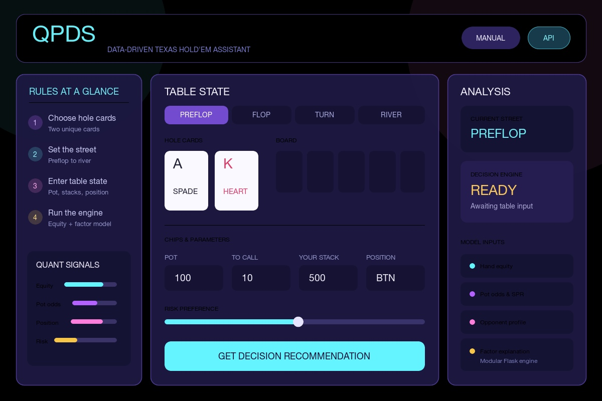

Education 教育经历
|
|
Peking University, School of Physics
Sep. 2024 - Jul. 2028 (Expected)
B.S. in Physics
- Cumulative GPA: 3.667/4.000.
- Selected coursework (grades out of 100): Probability and Statistics (98),
Theoretical Mechanics (95), Modern Physics (91), Optics (90),
Methods of Mathematical Physics II (90), and Linear Algebra (89).
|
Research 科研经历
|
|
My current interests include computational condensed matter physics,
molecular and phonon Berry curvature, lattice dynamics, and phonon thermal
Hall transport. My research training is currently at the literature-review
and method-preparation stage.
|
|
Berry Curvature and Phonon Thermal Hall Transport
Apr. 2026 - Present
Undergraduate Research Training · Advisor: Prof. Ji Feng, Peking University
- Reviewed the theoretical connection between molecular Berry curvature, phonon dynamics, phonon Berry curvature, and thermal Hall response through literature reading and discussion.
- Focused reading includes Qin, Zhou, and Shi, Phys. Rev. B 86, 104305 (2012), and Saparov et al., Phys. Rev. B 105, 064303 (2022).
- Completed an initial synthesis of the theoretical framework. Current work is at the literature and method preparation stage, with building a tractable model and numerical implementation as next goals.
|
Projects 项目经历
|
|
Climbing Magnet Experiment and Preliminary Modeling
Three-person team · Tracker, Origin, MATLAB
- Worked on a rotating magnetic rod experiment, extracting motion trajectories with Tracker and fitting data using Origin.
- Contributed to a simplified force model and MATLAB visualization, examining limitations associated with friction and asymmetric contact.
|
|

|
QPDS: Quantitative Poker Decision System
Python, Flask, pytest · AI-assisted development
- Developed a Python application using Monte Carlo sampling and limited exact enumeration to estimate hand equity and compare expected values, with AI-assisted coding.
- Used pytest for numerical and boundary checks, with Flask separating the calculation module from the web interface.
|
|
|
Modern Art: Board Game Digital Assistant
Python, Streamlit
- Implemented auction-state management for 3-5 players across four rounds, including fifth-painting termination, cumulative artist values, round settlement, and final asset rankings.
- Added a bilingual interface, transaction logs, JSON save/load, undo support, and artist-value history charts.
|
|
Personal Blog Deployment and Migration
Docker Compose, Nginx, GitHub Actions, Linux
- Deployed MX-Space, MongoDB, and Redis with Docker Compose; configured Nginx reverse proxying; and automated the Shiro frontend build and SSH/PM2 release workflow with GitHub Actions.
- Migrated the personal homepage, articles, and project records to GitHub Pages after the previous server and domain expired.
|
Notes 随笔
|
- 偏微分方程计算方法 2026-07-22 · 核心主题：有限差分法、基矢展开法（含 DVR）、B-样条、小波分析、有限元法、复杂边界条件处理
- 如何优雅地部署自己的个人博客主页 🚀 2026-07-22 · 2025年7月15号，作为一个爱水群的入，被群里一位学长炫酷的个人主页所吸引（询问后发现是 Shiro 主题 ）于是开启一段小白搭配AI配置…
- 微分方程计算方法 2026-07-22 · 💡 物理直觉：初值问题是"知道现在，推演未来"（动力学），边值问题是"知道两端，反推中间"（稳态分布）。
- 数值微分与积分 2026-07-22 · 用离散点的函数值近似连续的微分/积分，通过多项式插值作为桥梁——先从离散点构造插值多项式，再对多项式求导/积分获得数值微分/积分公式。
- 本征值问题 2026-07-22 · 本质上 主线就是 把物理问题 变成 矩阵的本征值问题，然后利用正交变换把矩阵“变得简单但保证其本征值不变”，再利用迭代法吧本征值计算出来！
- 神经网络与机器学习 2026-07-22 · 机器学习已发展成为一种新的科学范式——当物理方程难以描述或求解时，用数据驱动的方法进行推断。物理学中各领域 ML 论文数量爆发式增长：
- 蒙特卡洛方法 2026-07-22 · 通过统计采样（随机抽样）解决传统方法难以处理的数学/物理问题——积分、优化、多自由度系统模拟等。
|
Honors & Awards 荣誉与奖项
|
- Qin Wanshun and Jin Yunhui Scholarship · 2025-2026 Academic Year
- Merit Student, Peking University · 2025-2026 Academic Year
- Academic Excellence Award, Peking University · 2024-2025 Academic Year
- School of Physics Merit Award, Chinese Undergraduate Physics Tournament (CUPT) · Jun. 2025
- Silver Medal, Chinese Physics Olympiad Final (CPhO) · Oct. 2023
|
Skills & Activities 技能与校园经历
|
- Programming & analysis: Python (NumPy, pandas, Matplotlib, pytest), MATLAB, basic C++.
- Experimental tools: Tracker, Origin, experimental data analysis and visualization.
- Development & deployment: Git, Linux, Flask, Streamlit, Docker Compose, Nginx, GitHub Actions; AI-assisted coding workflows.
- Campus activities: Peking University wushu team; class representative and student administrative assistant.
|
|